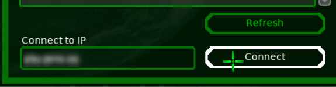

The download page only has binaries for Linux and Windows. We compiled the macOS version ourselves. Download: ufoai-macos.tar.bz2
Then open the Terminal and type the following:
tar xf ufoai-macos.tar.bz2
cd dist
./ufo
To get rid of the graphical glitches disable "GLSL Shaders" under Options → Video → Advanced → OpenGL Setting
Click on Multiplayer. You'll need to create a team before you can do anything, so click on Team and then Generate New Team and choose the type you want.

Click no the done button at the very bottom right if you are happy with it. You'll return to the multiplayer menu
Click on Join and type {{ site.content.domain_name }} in the field for Connect to IP and click Connect.
You'll see a summary of the server. Click on Connect to connect.